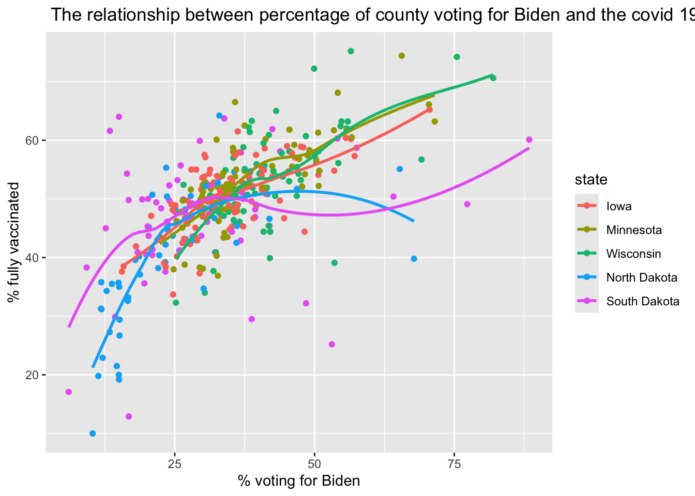
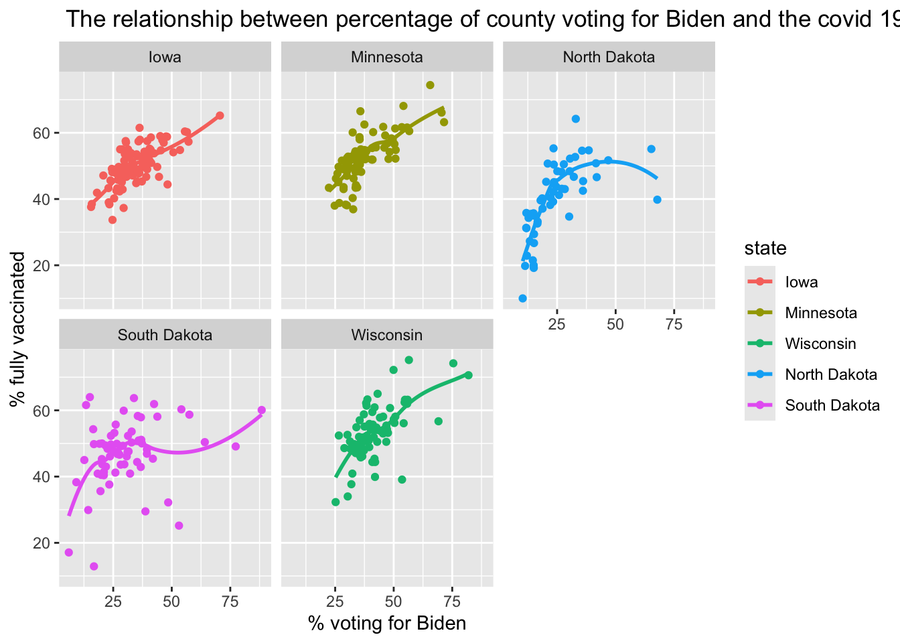
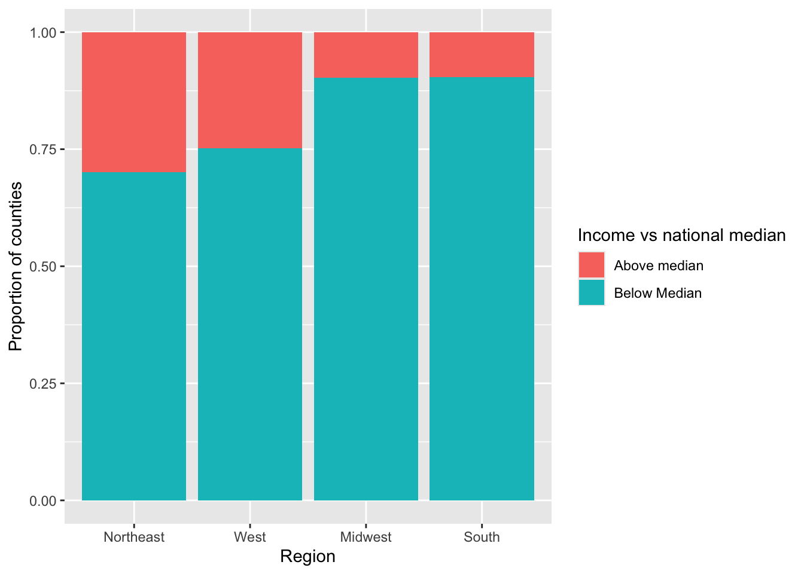
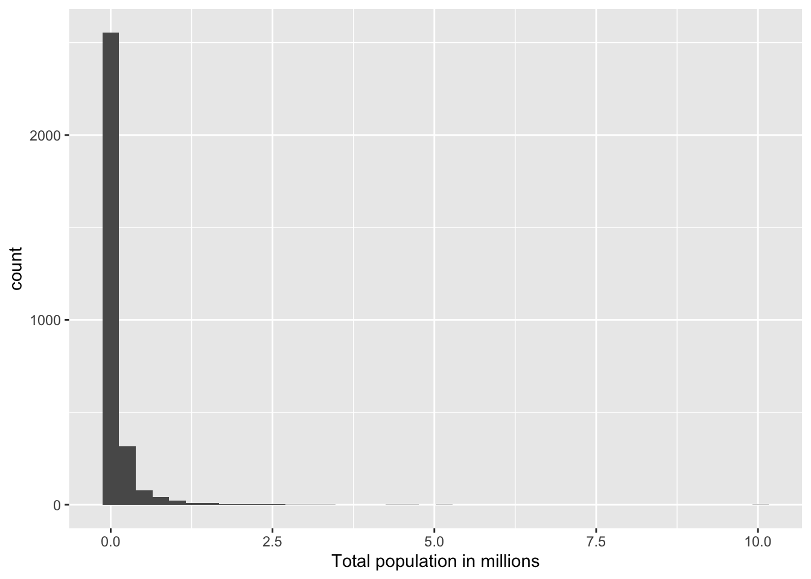
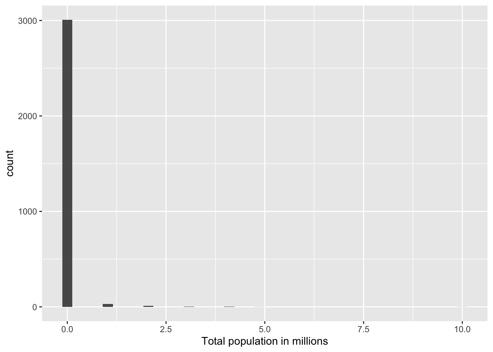
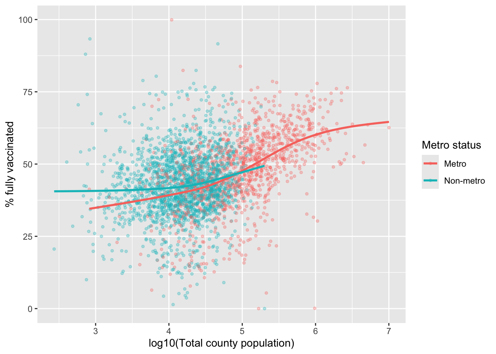
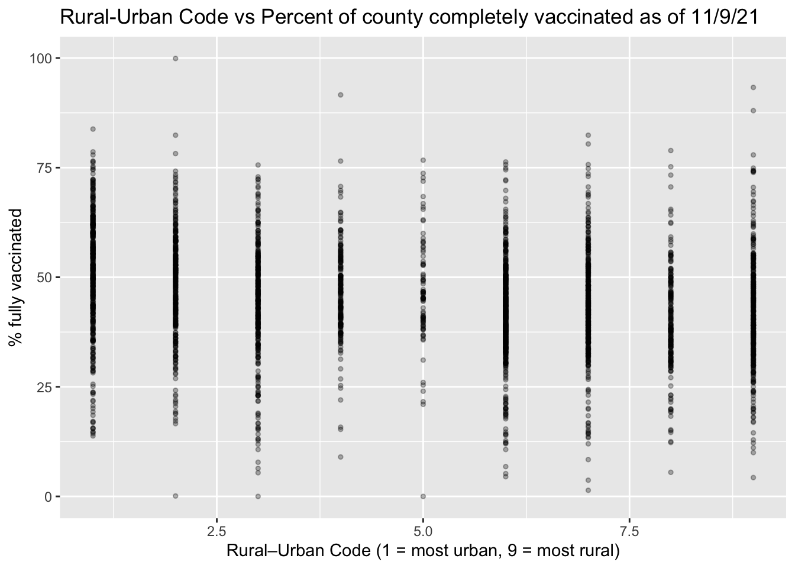
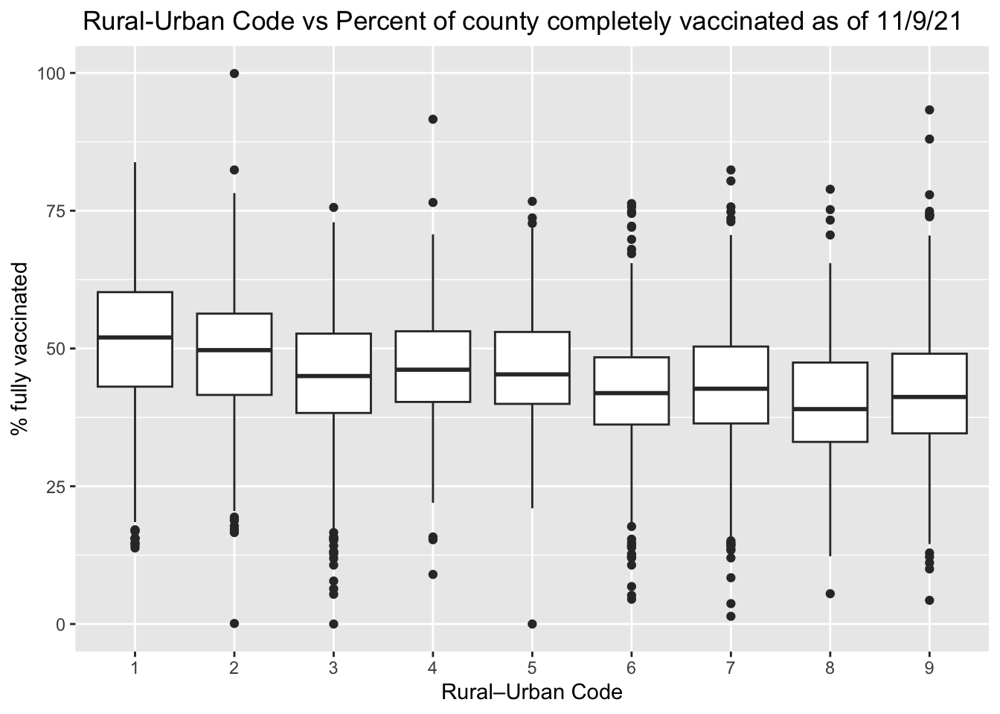
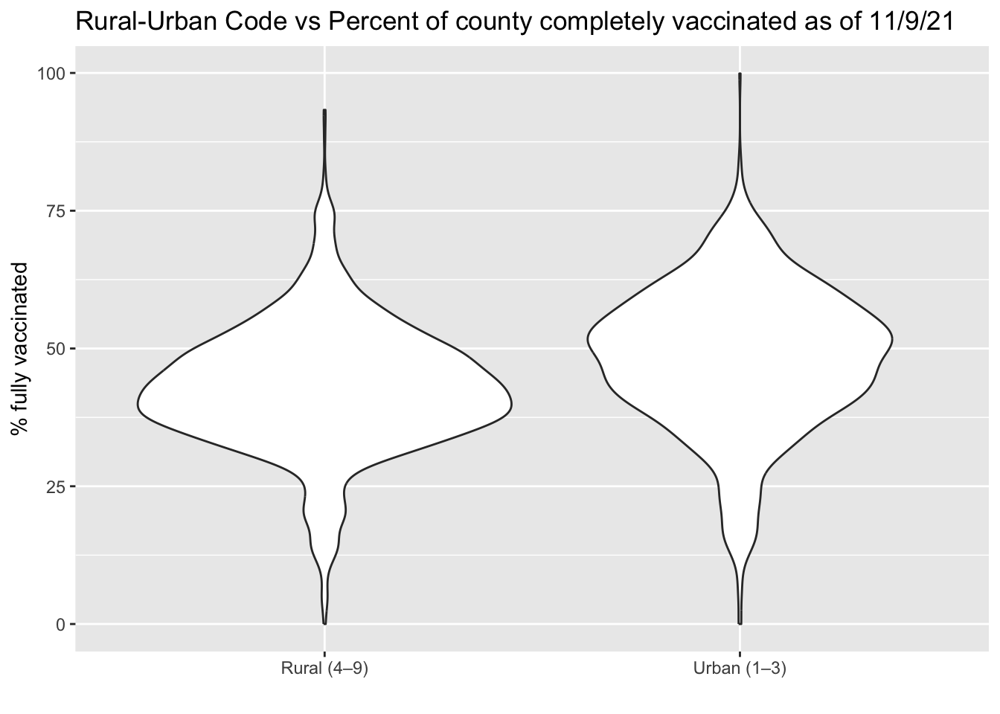
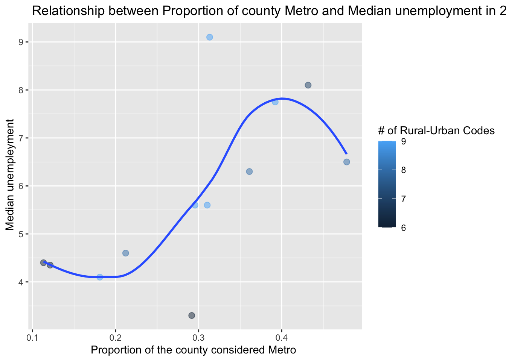

Rows: 3053 Columns: 14
── Column specification ────────────────────────────────────────────────────────
Delimiter: ","
chr (4): state, county, region, metro_status
dbl (10): rural_urban_code, perc_complete_vac, tot_pop, votes_Trump, votes_B...
ℹ Use `spec()` to retrieve the full column specification for this data.
ℹ Specify the column types or set `show_col_types = FALSE` to quiet this message.
Approach 1: create a Data folder in the same location where this .qmd file resides, and then store vaccinations_2021.csv in that Data folder
Approach 2: give R the complete path to the location of vaccinations_2021.csv, starting with Home (~)
Approach 3: link to our course webpage, and then know we have a Data folder containing all our csvs
Approach 4: navigate to the data in GitHub, hit the Raw button, and copy that link
A recent Stat 272 project examined determinants of covid vaccination rates at the county level. Our data set contains 3053 rows (1 for each county in the US) and 14 columns; here is a quick description of the variables we’ll be using:
state = state the county is located in
county = name of the county
region = region the state is located in
metro_status = Is the county considered “Metro” or “Non-metro”?
rural_urban_code = from 1 (most urban) to 9 (most rural)
perc_complete_vac = percent of county completely vaccinated as of 11/9/21
tot_pop = total population in the county
votes_Trump = number of votes for Trump in the county in 2020
votes_Biden = number of votes for Biden in the county in 2020
perc_Biden = percent of votes for Biden in the county in 2020
ed_somecol_perc = percent with some education beyond high school (but not a Bachelor’s degree)
ed_bachormore_perc = percent with a Bachelor’s degree or more
unemployment_rate_2020 = county unemployment rate in 2020
median_HHincome_2019 = county’s median household income in 2019
library(dplyr)library(ggplot2)library(forcats)
Consider only Minnesota and its surrounding states (Iowa, Wisconsin, North Dakota, and South Dakota). We want to examine the relationship between the percentage who voted for Biden and the percentage of complete vaccinations by state. Generate two plots to examine this relationship:
A scatterplot with points and smooters colored by state. Make sure the legend is ordered in a meaningful way, and include good labels on your axes and your legend. Also leave off the error bars from your smooters.
what you need for this - call in the data - filter by state -ggplot -geom_point -geom_smooth -mutate fct_reorder
vaccinations_2021|>filter(state %in%c( "Minnesota","Iowa", "Wisconsin", "North Dakota", "South Dakota"))|>ggplot(aes(x = perc_Biden,y = perc_complete_vac, color=fct_reorder2(state, perc_complete_vac, perc_Biden))) +geom_point()+geom_smooth(se =FALSE) +labs(title =" The relationship between percentage of county voting for Biden and the covid 19 vaccination rate in the country",x ="% voting for Biden",y="% fully vaccinated",color ="state")
`geom_smooth()` using method = 'loess' and formula = 'y ~ x'

One plot per state containing a scatterplot and a smoother.
vaccinations_2021 |>filter(state %in%c( "Minnesota","Iowa", "Wisconsin", "North Dakota", "South Dakota"))|>ggplot(aes(x = perc_Biden,y = perc_complete_vac, color=fct_reorder2(state, perc_complete_vac, perc_Biden))) +geom_point()+geom_smooth(se =FALSE) +labs(title =" The relationship between percentage of county voting for Biden and the covid 19 vaccination rate in the country",x ="% voting for Biden",y="% fully vaccinated",color ="state") +facet_wrap(~state)
`geom_smooth()` using method = 'loess' and formula = 'y ~ x'

Describe which plot you prefer and why. What can you learn from your preferred plot?
Second one because it’s easier for me to see the trend clearly in every state
We wish to compare the proportions of counties in each region with median household income above the national median ($69,560).
Fill in the blanks below to produce a segmented bar plot with regions ordered from highest proportion above the median to lowest.
library(tidyverse)income <- vaccinations_2021 |>mutate(HHincome_vs_national =ifelse(median_HHincome_2019 >=69560,"Above median","Below Median"))region_order <- income |>group_by(region) |>summarise(prop_above =mean(median_HHincome_2019 >=69560, na.rm =TRUE)) |>arrange(desc(prop_above)) |>pull(region)income |>mutate(region_sort =fct_relevel(region, region_order)) |>ggplot(aes(x = region_sort, fill = HHincome_vs_national)) +geom_bar(position ="fill") +labs(x ="Region", y ="Proportion of counties", fill ="Income vs national median")

Create a table of proportions by region to illustrate that your bar plot in (a) is in the correct order (you should find two regions that are really close when you just try to eyeball differences).
income |>group_by(region) |>summarise(n =n(),prop_above =mean(median_HHincome_2019 >=69560, na.rm =TRUE) ) |>arrange(desc(prop_above))
# A tibble: 4 × 3
region n prop_above
<chr> <int> <dbl>
1 Northeast 217 0.300
2 West 436 0.248
3 Midwest 986 0.0974
4 South 1414 0.0962
Explain why we can replace fct_relevel(region, FILL IN CODE) with
We want to examine the distribution of total county populations and then see how it’s related to vaccination rates.
Carefully and thoroughly explain why the two histograms below provide different plots.
vaccinations_2021 |>mutate(tot_pop_millions = tot_pop /1000000) |>ggplot(mapping =aes(x = tot_pop_millions)) +geom_histogram(bins =40) +labs(x ="Total population in millions")

vaccinations_2021 |>mutate(tot_pop_millions = tot_pop %/%1000000) |>ggplot(mapping =aes(x = tot_pop_millions)) +geom_histogram(bins =40) +labs(x ="Total population in millions")

The first one uses regular division, producing a continuous measure of population in millions, while the second uses integer division, which truncates values and forces counties into whole-number population categories.
Find the top 5 counties in terms of total population.
vaccinations_2021 |>arrange(desc(tot_pop)) |>slice_head(n =5) |>select(state, county, tot_pop)
# A tibble: 5 × 3
state county tot_pop
<chr> <chr> <dbl>
1 California Los Angeles County 10039107
2 Illinois Cook County 5150233
3 Texas Harris County 4713325
4 Arizona Maricopa County 4485414
5 California San Diego County 3338330
Plot a histogram of logged population and describe this distribution.
Plot the relationship between log population and percent vaccinated using separate colors for Metro and Non-metro counties (be sure there’s no 3rd color used for NAs). Reduce the size and transparency of each point to make the plot more readable. Describe what you can learn from this plot.
`geom_smooth()` using method = 'gam' and formula = 'y ~ s(x, bs = "cs")'

Produce 3 different plots for illustrating the relationship between the rural_urban_code and percent vaccinated. Hint: you can sometimes turn numeric variables into categorical variables for plotting purposes (e.g. as.factor(), ifelse()).
ggplot(vaccinations_2021,aes(x = rural_urban_code, y = perc_complete_vac)) +geom_point(alpha =0.3, size =1) +geom_smooth(se =FALSE) +labs(x ="Rural–Urban Code (1 = most urban, 9 = most rural)",y ="% fully vaccinated",title ="Rural-Urban Code vs Percent of county completely vaccinated as of 11/9/21" )
`geom_smooth()` using method = 'gam' and formula = 'y ~ s(x, bs = "cs")'
Warning: Failed to fit group -1.
Caused by error in `smooth.construct.cr.smooth.spec()`:
! x has insufficient unique values to support 10 knots: reduce k.

vaccinations_2021 |>mutate(ruc =as.factor(rural_urban_code)) |>ggplot(aes(x = ruc, y = perc_complete_vac)) +geom_boxplot() +labs(x ="Rural–Urban Code",y ="% fully vaccinated", title =" Rural-Urban Code vs Percent of county completely vaccinated as of 11/9/21 " )

This is a boxplot showing the distribution of the percent of county population fully vaccinated as of 11/9/21 by rural–urban code. X axis represent rural–urban code ranging from 1 = most urban to 9 = most rural. The Y axis represents percentage of county completely vaccinated. Each box represents counties within a rural–urban code category, and points indicate outliers. he general pattern shows that median vaccination rates are highest for the most urban counties (codes 1 and 2). Overall, the plot suggests that counties that are more rural tend to have lower and more variable vaccination rates than more urban counties.
vaccinations_2021|>mutate(urban_group =ifelse(rural_urban_code <=3,"Urban (1–3)","Rural (4–9)")) |>ggplot(aes(x = urban_group, y = perc_complete_vac)) +geom_violin() +labs(x ="",y ="% fully vaccinated",title ="Rural-Urban Code vs Percent of county completely vaccinated as of 11/9/21 " )

State your favorite plot, why you like it better than the other two, and what you can learn from your favorite plot. Create an alt text description of your favorite plot, using the Four Ingredient Model. See this link for reminders and references about alt text.
BEFORE running the code below, sketch the plot that will be produced by R. AFTER running the code, describe what conclusion(s) can we draw from this plot?
It is a scatter plot. it is ordered by states from the lowest interquatile range of proportion voting for Biden to the highest. IQR_Biden is on the x axis and States name on the Y-axis
vaccinations_2021 |>filter(!is.na(perc_Biden)) |>mutate(big_states =fct_lump(state, n =10)) |>group_by(big_states) |>summarize(IQR_Biden =IQR(perc_Biden)) |>mutate(big_states =fct_reorder(big_states, IQR_Biden)) |>ggplot() +geom_point(aes(x = IQR_Biden, y = big_states))
** 6. In this question we will focus only on the 12 states in the Midwest (i.e. where region == “Midwest”).
Create a tibble with the following information for each state. Order states from least to greatest state population.
number of different rural_urban_codes represented among the state’s counties (there are 9 possible)
Use your tibble in (a) to produce a plot of the relationship between proportion of Metro counties and median unemployment rate. Points should be colored by the number of different rural_urban_codes in a state, but a single linear trend should be fit to all points. What can you conclude from the plot?
States with moderate Metro proportions tend to have higher unemployment, but the pattern is not strictly linear and does not appear very strong
vaccinations_2021|>filter(region =="Midwest")|>group_by(state)|>summarize( n_ruc =n_distinct(rural_urban_code),state_pop =sum(tot_pop),prop_metro =mean(metro_status =="Metro"),median_unemp =median(unemployment_rate_2020))|>ggplot(aes(x = prop_metro,y = median_unemp, color = n_ruc)) +geom_point(alpha =0.5, size =2.5)+geom_smooth(se =FALSE)+labs(x ="Proportion of the county considered Metro ",y =" Median unempleyment",color ="# of Rural-Urban Codes",title =" Relationship between Proportion of county Metro and Median unemployment in 2020" )
`geom_smooth()` using method = 'loess' and formula = 'y ~ x'
Warning: The following aesthetics were dropped during statistical transformation:
colour.
ℹ This can happen when ggplot fails to infer the correct grouping structure in
the data.
ℹ Did you forget to specify a `group` aesthetic or to convert a numerical
variable into a factor?

Generate an appropriate plot to compare vaccination rates between two subregions of the US: New England (which contains the states Maine, Vermont, New Hampshire, Massachusetts, Connecticut, Rhode Island) and the Upper Midwest (which, according to the USGS, contains the states Minnesota, Wisconsin, Michigan, Illinois, Indiana, and Iowa). What can you conclude from your plot?
In this next section, we consider a few variables that could have been included in our data set, but were NOT. Thus, you won’t be able to write and test code, but you nevertheless should be able to use your knowledge of the tidyverse to answer these questions.
Here are the hypothetical variables:
HR_party = party of that county’s US Representative (Republican, Democrat, Independent, Green, or Libertarian)
people_per_MD = number of residents per doctor (higher values = fewer doctors)
perc_over_65 = percent of residents over 65 years old
perc_white = percent of residents who identify as white
Describe the tibble temp created above. What would be the dimensions? What do rows and columns represent?
- 3 x4
- 3 rows of doctor access groups and 4 columns of group label, mean vaccination, mean % white and counts
What would happen if we replaced new_perc_vac = ifelse(perc_complete_vac > 95, NA, perc_complete_vac) with new_perc_vac = ifelse(perc_complete_vac > 95, perc_complete_vac, NA)?
You keep counties with vaccination >95. All the counties <= 95 will become NA
What would happen if we replaced mean_white = mean(perc_white, na.rm = TRUE) with mean_white = mean(perc_white)?
If any county in a group that has perc_white = NA, the whole group will become NA
What would happen if we removed group_by(MD_group)?
The summerize() will do to the whole data set, instead of doing it within the group
Hypothetical R chunk #2:
# Hypothetical R chunk 2ggplot(data = vaccine_data) +geom_point(mapping =aes(x = perc_over_65, y = perc_complete_vac, color = HR_party)) +geom_smooth()temp <- vaccine_data |>group_by(HR_party) |>summarise(var1 =n()) |>arrange(desc(var1)) |>slice_head(n =3)vaccine_data |>ggplot(mapping =aes(x =fct_reorder(HR_party, perc_over_65, .fun = median), y = perc_over_65)) +geom_boxplot()
Why would the first plot produce an error? Because the variable perc_over_65 doesn’t exist in the main dataset
Describe the tibble temp created above. What would be the dimensions? What do rows and columns represent? Since the at the end we got slice_head(n = 3), which mean keep the top 3 parties with the most counties. I think the dimension is 3 x 2
- 3 rows of top 3 parties- 2 columns of HR_party and var1
What would happen if we replaced fct_reorder(HR_party, perc_over_65, .fun = median) with HR_party? The boxplots will be ordered by its default, can be alphabetical or whatever the dataset uses, not by the median of parc_over_65.
Hypothetical R chunk #3:
# Hypothetical R chunk 3vaccine_data |>filter(!is.na(people_per_MD)) |>mutate(state_lump =fct_lump(state, n =4)) |>group_by(state_lump, rural_urban_code) |>summarise(mean_people_per_MD =mean(people_per_MD)) |>ggplot(mapping =aes(x = rural_urban_code, y = mean_people_per_MD, colour =fct_reorder2(state_lump, rural_urban_code, mean_people_per_MD))) +geom_line()
Describe the tibble piped into the ggplot above. What would be the dimensions? What do rows and columns represent?
The dimmension is going to be 5 x 3
5 rows: 4 of them are the name of the top largest states, 1 of of them called ” Others” will dedicate to other state beside the 4 states
3 columns: State, rural_urban_code and mean_people_per_MD
Carefully describe the plot created above.
It is a multiple lines plots, x-axis= rural_urban_code which 1 is the most urban → 9 most rural. Y-axis = mean_people_per_MD which represent average people per doctor. Each line Each line shows how doctor access changes across rural–urban codes for that state group, therefore, we get different colors line. The fct_reorder2 wil change the legend based on how their lines behave at higher x-values (usually based on where the line ends).
What would happen if we removed filter(!is.na(people_per_MD))?
Any missing value for variable people_per_MD will shows up and we will get another line called NA and geom_line() will produce broken lines / gaps
What would happen if we replaced fct_reorder2(state_lump, rural_urban_code, mean_people_per_MD) with state_lump?
The legend order becomes the default factor order (often alphabetical / original), instead of being ordered by the line “end” behavior.